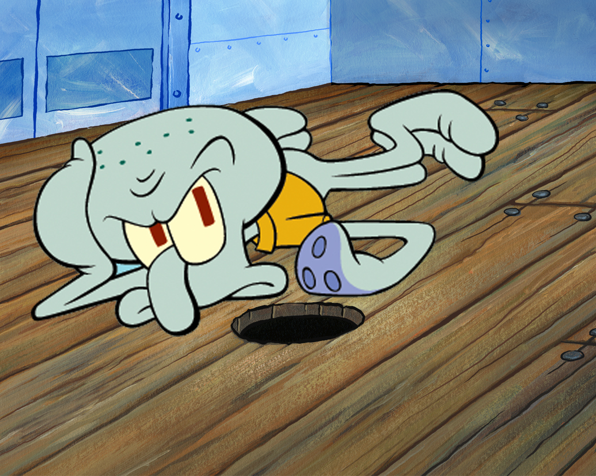

Squidward
Squidward Tentacles adalah gurita yang bekerja sebagai kasir di Krusty Krab, dan selalu kesal dengan sikap SpongeBob yang menjengkelkan, meskipun begitu squidward tetap menganggap bahwa SpongeBob itu adalah seoarang sahabatnya
Squidward juga tetanggaan dengan spongebob, dan dia juga tinggal di kota yang sama dengan spongebob yaitu, kota bikini bottom